Custom Reusable Element
Open Custom Reusable Elements ↗Add a Custom Library and give it a Name and ID.
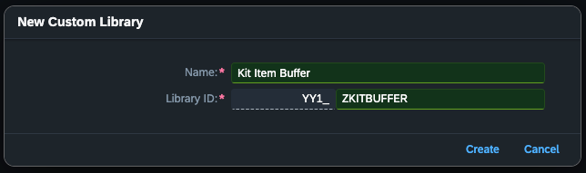
Create the reusable element in this order:
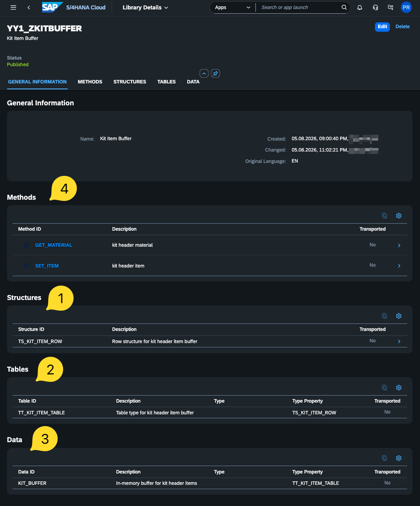
Details of Structures
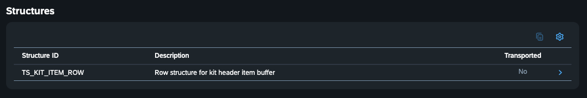
Component ITEM_NUMBER
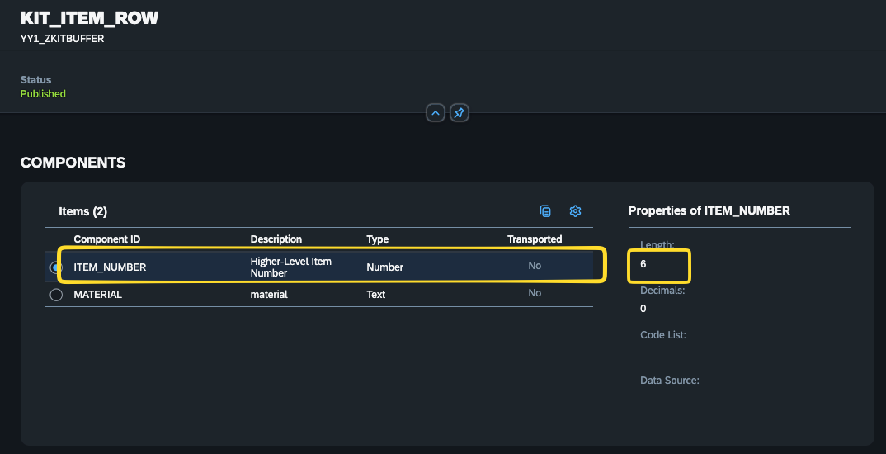
Component MATERIAL
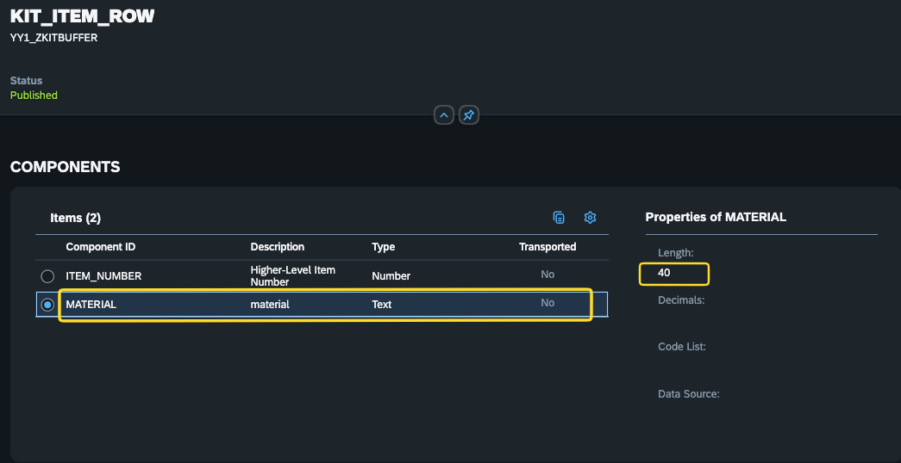
Details of Methods
Create two methods and their associated parameters.
Method GET_MATERIAL
- Parameter
IV_POSNR - Parameter
RV_MATNR— returning parameter
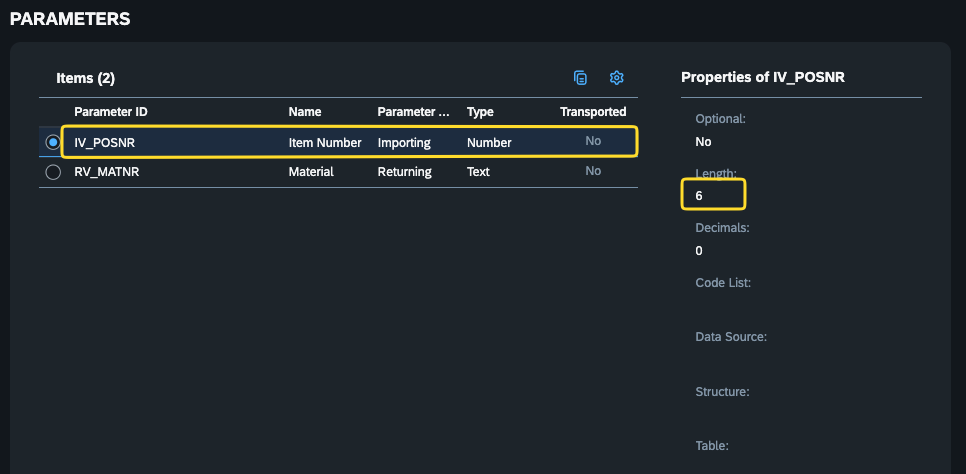
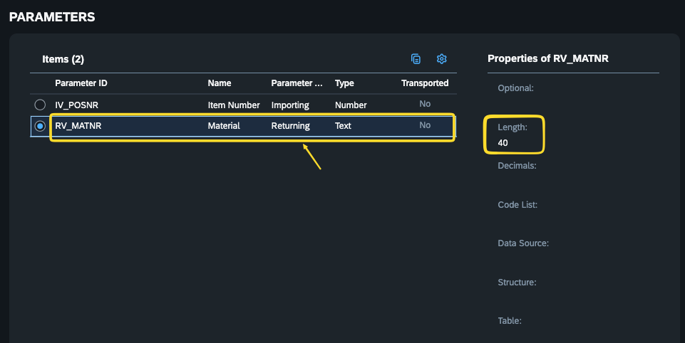
Code for GET_MATERIAL
ABAPDATA ls_row TYPE yy1_zkitbuffer=>ts_kit_item_row.
READ TABLE yy1_zkitbuffer=>kit_buffer
WITH KEY item_number = iv_posnr
INTO ls_row.
IF sy-subrc = 0.
rv_matnr = ls_row-material.
ENDIF.Method SET_ITEM
- Parameter
IV_POSNR - Parameter
IV_MATNR
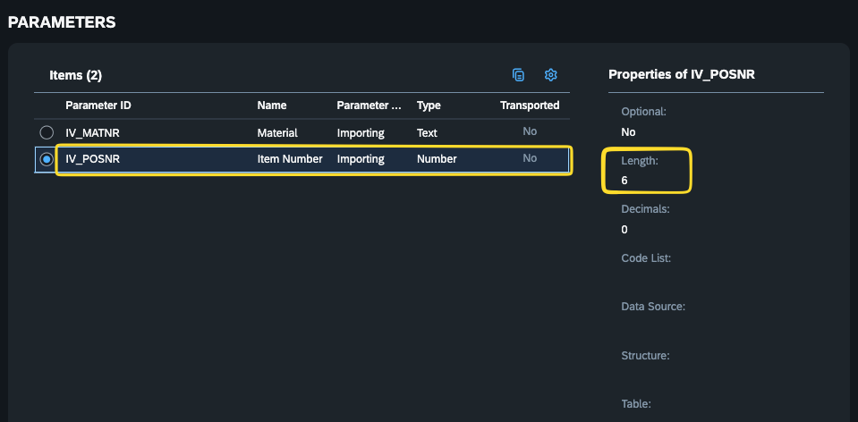
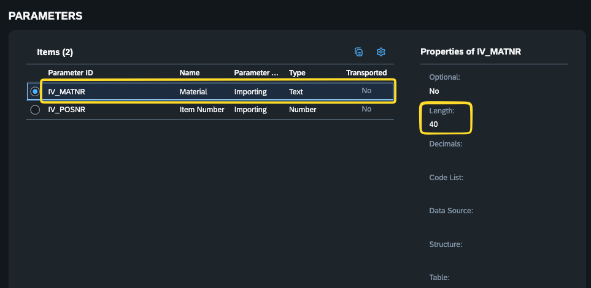
Code for SET_ITEM
ABAPDATA ls_row TYPE yy1_zkitbuffer=>ts_kit_item_row.
READ TABLE yy1_zkitbuffer=>kit_buffer
WITH KEY item_number = iv_posnr
TRANSPORTING NO FIELDS.
IF sy-subrc = 0.
DELETE yy1_zkitbuffer=>kit_buffer INDEX sy-tabix.
ENDIF.
ls_row-item_number = iv_posnr.
ls_row-material = iv_matnr.
INSERT ls_row INTO TABLE yy1_zkitbuffer=>kit_buffer.Custom Field
Open Custom Fields ↗Create a new custom field.
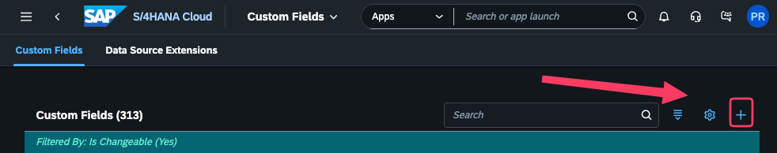
When creating the field, select the appropriate Business Context.
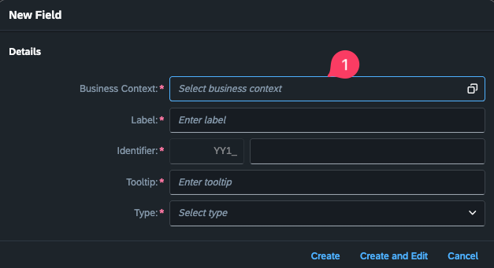
- Sales order:
SD_SALESDOCITEM - Sales: Sales Document Item - Outbound delivery:
LE_SHP_DELIVERYITEM - Shipping: Delivery Item
Define the field
This example starts in the sales order item context and propagates the field through delivery to billing.
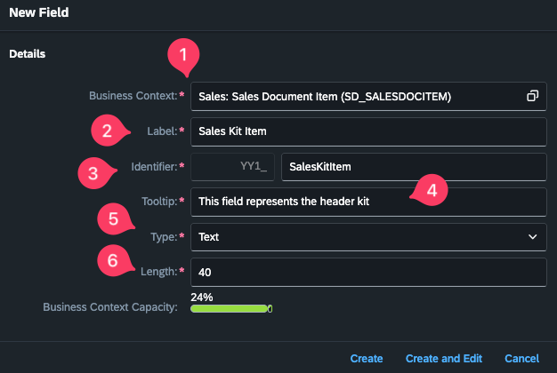
- Business Context
- User-facing field name
- Technical name — generated in the
YY1_customer namespace - Tooltip
- Technical type
- Field length
Click Create and Edit.
Enable usage in business scenarios
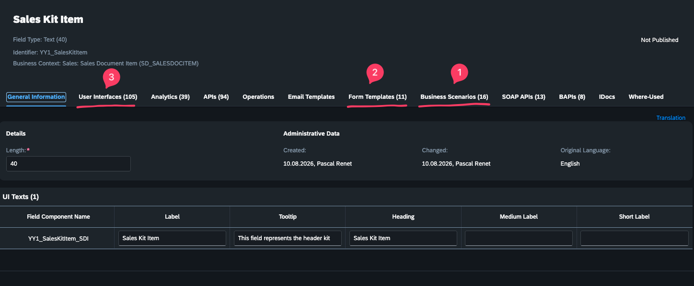
In the Business Scenarios tab, enable Sales Document to Delivery on Item Level.
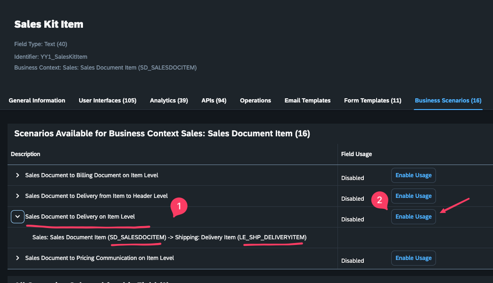
The field can also be enabled for form templates and user interfaces where required.
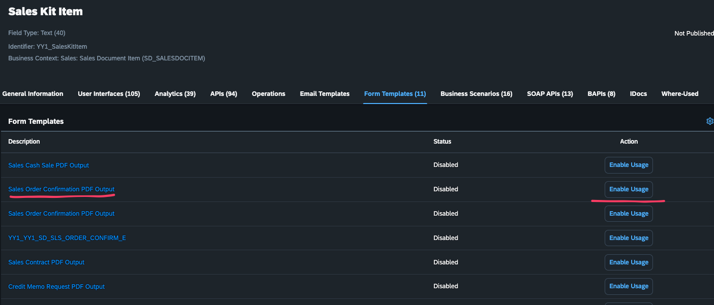
Save the field, return to the main Custom Fields screen and search for your field.
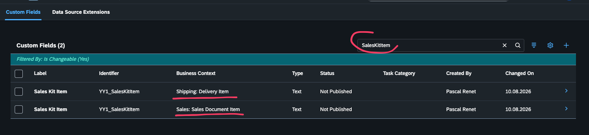
Shipping: Delivery Item context
Open the generated Shipping: Delivery Item version of the field.
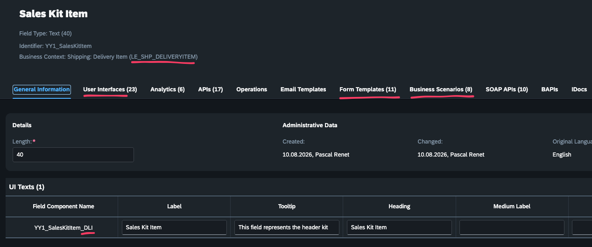
Enable the Delivery to Billing Document on Item Level scenario.
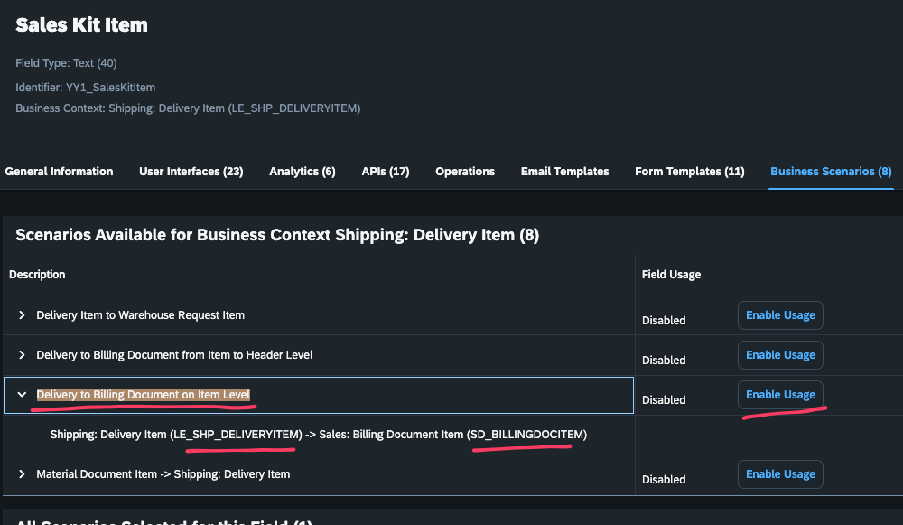
Enable the required forms and user interfaces, for example the relevant pick-list or delivery-related forms.
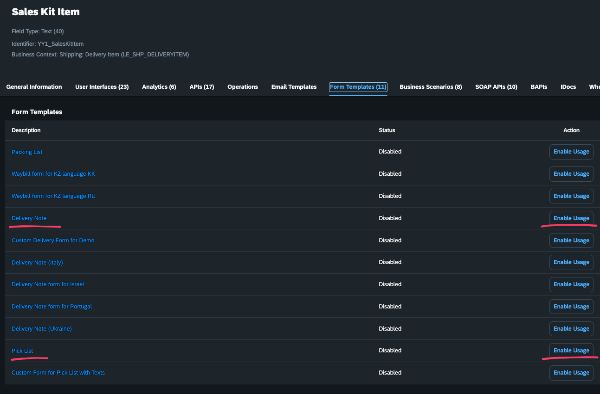
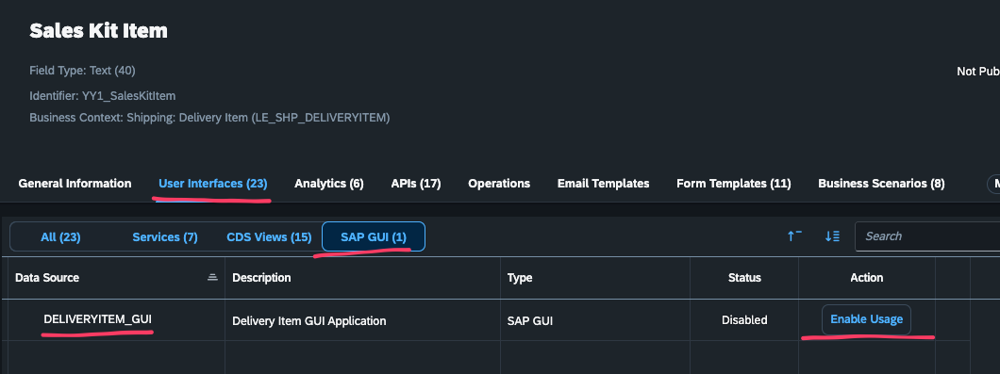
Once complete, you should see the field represented in three contexts: Sales Document Item, Shipping Delivery Item and Billing Document Item.
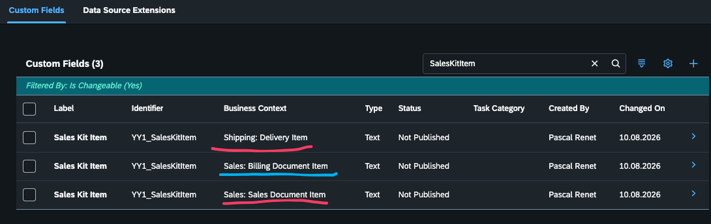
Configure the Billing Document Item usage as needed, then select the three fields and click Publish.
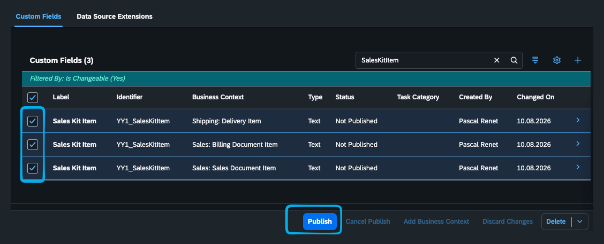
Custom Logic
Open Custom Logic ↗Sales Order extension point
Use extension point SD_SLS_MODIFY_ITEM.
Sales Order logic
ABAP* Only if user is PR
DATA(lv_user) = cl_abap_context_info=>get_user_technical_name( ).
IF lv_user = 'CB9980000235'.
salesdocumentitem_extension_o = salesdocumentitem_extension_i.
IF salesdocumentitem-higherlevelitem IS INITIAL.
yy1_zkitbuffer=>set_item(
iv_posnr = CONV #( salesdocumentitem-salesdocumentitem )
iv_matnr = CONV #( salesdocumentitem-material )
).
ELSE.
" BOM sub-item — retrieve kit header material from buffer
DATA(lv_hl_material) = yy1_zkitbuffer=>get_material(
iv_posnr = CONV #( salesdocumentitem-higherlevelitem )
).
IF lv_hl_material IS NOT INITIAL.
salesdocumentitem_extension_o-yy1_saleskititem_sdi = lv_hl_material.
ENDIF.
ENDIF.
ENDIF.Outbound Delivery extension point
Use extension point LE_SHP_MODIFY_ITEM.
Outbound Delivery logic
ABAP* Only if user is PR
DATA(lv_user) = cl_abap_context_info=>get_user_technical_name( ).
IF lv_user = 'CB9980000235'.
MOVE-CORRESPONDING delivery_document_in TO delivery_document_out.
MOVE-CORRESPONDING delivery_doc_changed_item_in TO delivery_doc_changed_item_out.
IF delivery_doc_changed_item_in-higherlevelitem IS INITIAL.
yy1_zkitbuffer=>set_item(
iv_posnr = CONV #( delivery_doc_changed_item_in-deliverydocumentitem )
iv_matnr = CONV #( delivery_doc_changed_item_in-material )
).
ELSE.
" BOM sub-item — retrieve kit header material from buffer
DATA(lv_hl_material) = yy1_zkitbuffer=>get_material(
iv_posnr = CONV #( delivery_doc_changed_item_in-higherlevelitem )
).
IF lv_hl_material IS NOT INITIAL.
delivery_doc_changed_item_out-ext-yy1_saleskititem_dli =
|{ lv_hl_material } { 'KIT' } { delivery_doc_changed_item_in-higherlevelitem }|.
ENDIF.
ENDIF.
ENDIF.